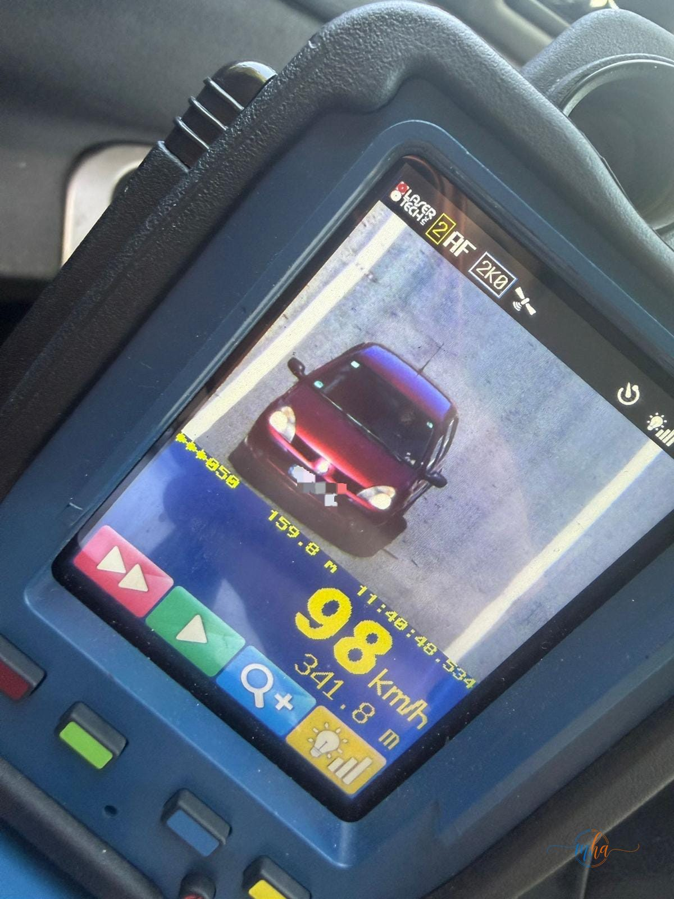
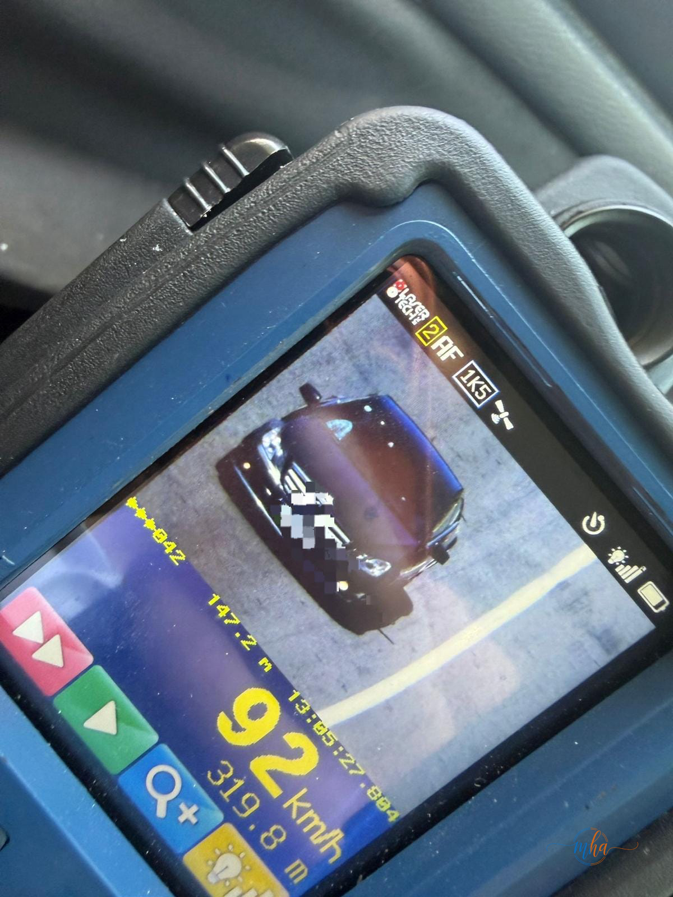
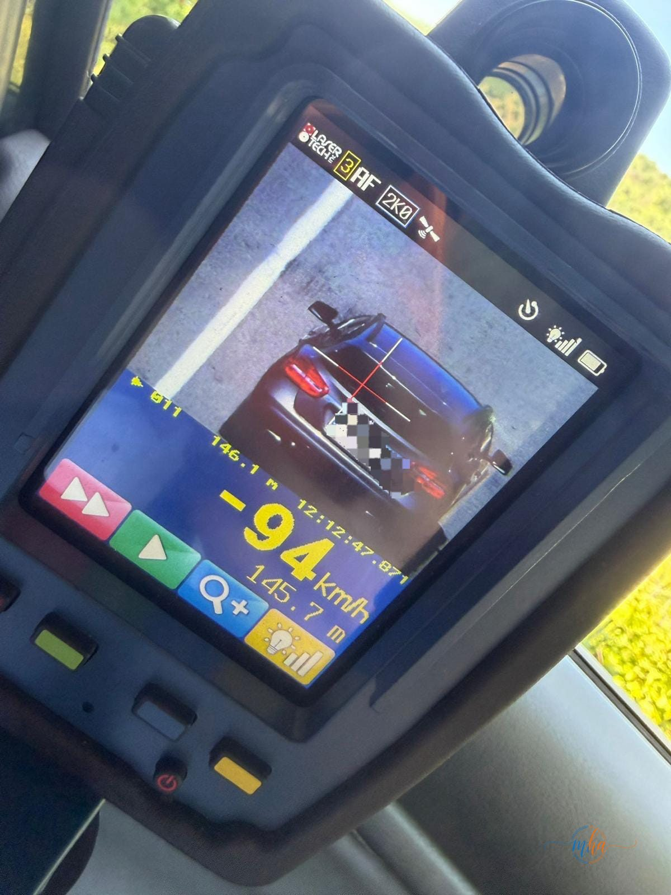
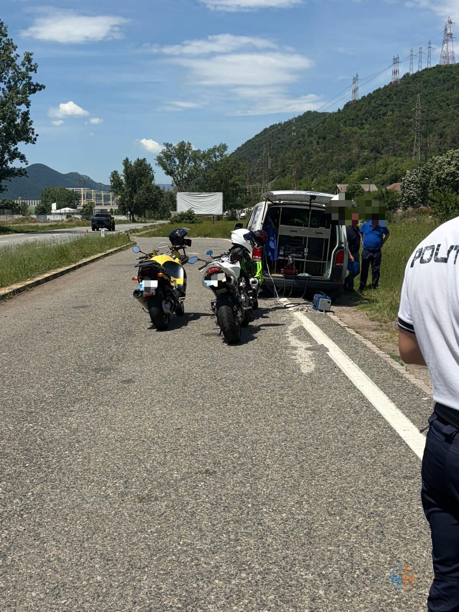

Ieri, 25 mai 2026, polițiștii rutieri din cadrul Inspectoratului de Poliție Județean Mehedinți au desfășurat o acțiune în sistem „Releu", în intervalul orar 11:00–15:00, cu scopul de a reduce riscul rutier și de a preveni accidentele de circulație pe drumurile din județ.
Acțiunea a mobilizat efective din structurile de poliție rutieră și polițiști de ordine publică, angrenate în 5 filtre rutiere amplasate strategic pe drumurile din județ. Au fost utilizate patru mijloace tehnice pentru măsurarea vitezei.

Unul dintre șoferii depistați circulând cu 98 km/h, surprins de radarul poliției rutiere din Mehedinți.
Ce abateri au fost constatate
Pe parcursul celor patru ore de acțiune, polițiștii au aplicat 109 sancțiuni contravenționale, cu o valoare totală de 90.000 de lei, după cum urmează:
- 17 sancțiuni pentru depășirea regimului legal de viteză
- 7 sancțiuni pentru depășiri neregulamentare
- 6 sancțiuni pentru neportul centurii de siguranță
- 79 sancțiuni pentru alte abateri la regimul rutier

Un alt autoturism surprins circulând cu viteză peste limita legală, fotografiat de radarul poliției.
Măsuri complementare dispuse de polițiști
Pe lângă amenzile aplicate, polițiștii au dispus și o serie de măsuri complementare pentru șoferii care au comis abateri grave:
- 6 certificate de înmatriculare retrase pentru nereguli constatate la vehicule
- 11 permise de conducere reținute
- 21 de vehicule verificate tehnic cu sprijinul Registrului Auto Român (RAR)

Al treilea autoturism surprins de radar, circulând cu 94 km/h în zona controlată de polițiști.
Zero testări pozitive la alcool și droguri
Un aspect pozitiv al acțiunii îl reprezintă rezultatele testărilor pentru depistarea consumului de substanțe psihoactive și alcool. Pe parcursul celor 4 ore, au fost efectuate:
- 54 de testări pentru depistarea consumului de băuturi alcoolice
- 5 testări pentru consumul de substanțe psihoactive
Nicio testare nu a înregistrat rezultat pozitiv — un semn îmbucurător că șoferii din Mehedinți respectă interdicțiile privind conducerea sub influența alcoolului sau a drogurilor.

Motocicletele nu au scăpat controalelor: polițiștii, sprijiniți de RAR, au verificat tehnic 21 de vehicule în cadrul acțiunii.
Nicio zi fără accidente – rezultat al acțiunii
Un rezultat important al desfășurării acțiunii „Releu": pe durata celor patru ore nu a fost înregistrat niciun accident rutier pe tronsoanele supravegheate, demonstrând că prezența polițiștilor în trafic și aplicarea legii au efect direct asupra siguranței rutiere.
Recomandăm tuturor participanților la trafic să manifeste responsabilitate și să respecte normele rutiere, pentru siguranța proprie și a celorlalți. — IPJ Mehedinți
Activități preventive desfășurate în paralel
Acțiunea nu s-a limitat doar la constatarea și sancționarea abaterilor. În cadrul activităților preventive, conducătorii auto opriți în filtre au primit informații despre importanța respectării regulilor de circulație, a limitelor legale de viteză și a adoptării unui comportament responsabil în trafic.
- Data: duminică, 25 mai 2026, orele 11:00–15:00
- Filtre rutiere instituite: 5
- Mijloace radar utilizate: 4
- Sancțiuni aplicate: 109 (valoare totală: 90.000 lei)
- Permise reținute: 11
- Certificate de înmatriculare retrase: 6
- Testări alcool: 54 (0 pozitive)
- Testări droguri: 5 (0 pozitive)
- Vehicule verificate tehnic (RAR): 21
- Accidente înregistrate: 0